Automating design of molecules via retrieval augmented generative language models
Andrew White
University of Rochester
ML in Drug Discovery
September, 2023
Inductive Bias
Explicit choices made in architecture that reflect data-generation or solution space.
Inductive Bias
Explicit choices made in architecture that reflect data-generation or solution space. physics
Inductive Bias
Mol Graph
Point Cloud
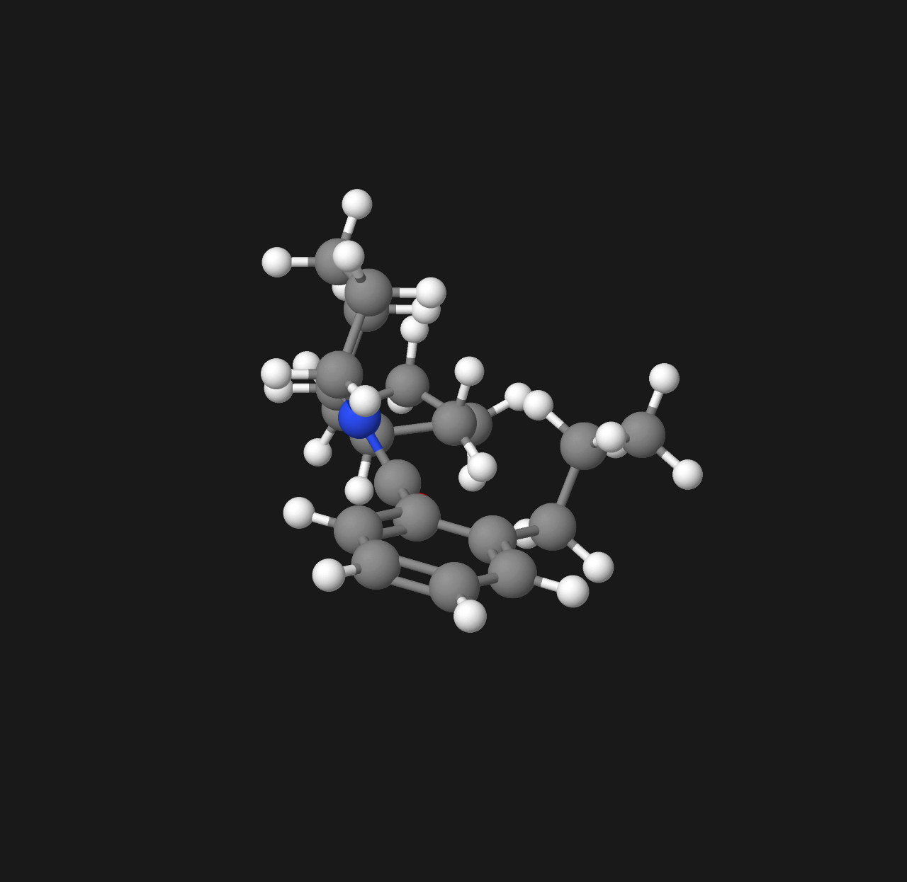Inductive Bias
Mol Graph
- atom permutation equivariance
- bond permutation equivariance
Point Cloud
- atom permutation equivariance
- translation equivariance
- rotation equivariance
The state of deep learning on molecules
Graph Neural Network

Graph convolutional neural network example.
What about stereochemistry?

Weisfeiler-Lehman
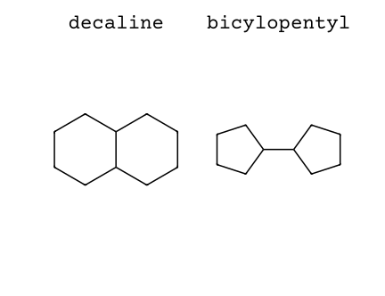Weisfeiler-Lehman
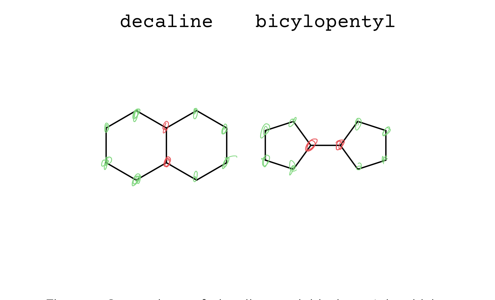global stereochemistry
Equivariant Neural Networks
- Embed local 3D environment - Body order
- Message pass geometry and features - Tensor Order
Body order
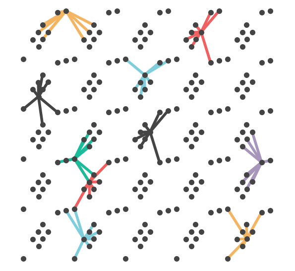Tensor order
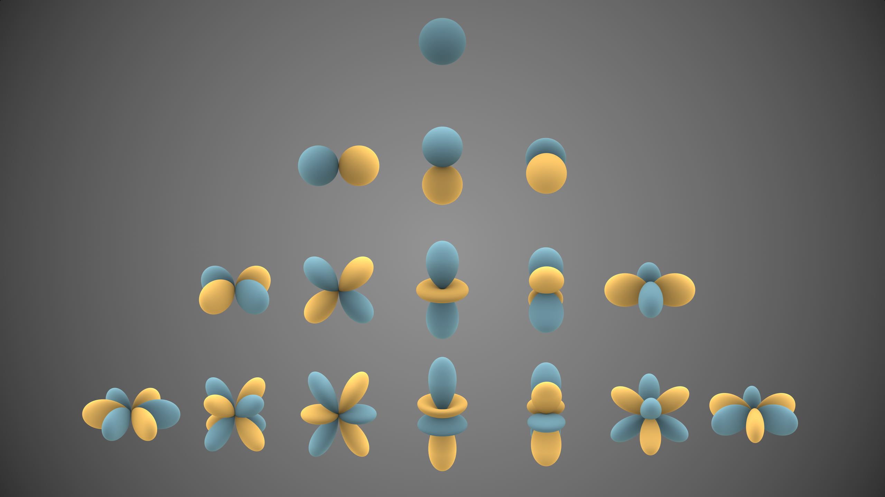Equivariant Message Passing

State of the field
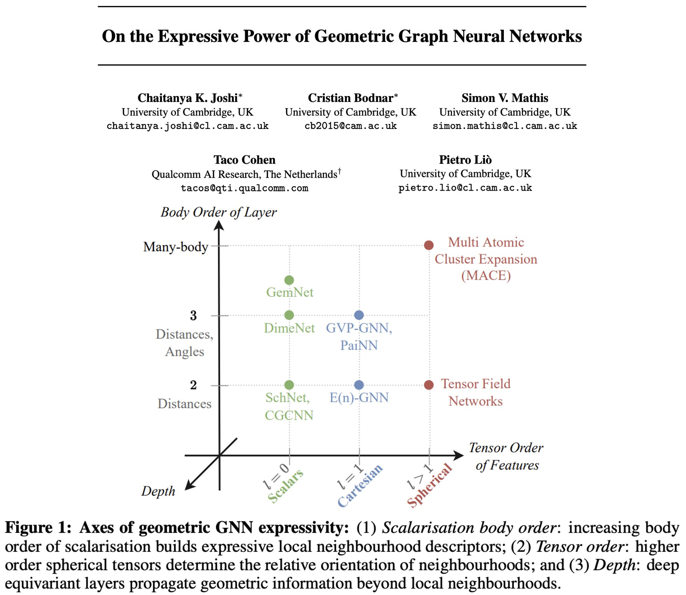The ladder of representation
- Descriptors
- SMILES
- Graph
- Simplex
- Nuclear coordinates
- Conformational Ensemble
- Electron density...
Does it matter?


IUPAC Name to LogS
"The solubility of 1-bromopropane is -1.73 logS"

Caldas M. et al 2023arXiv:2304.05341
Catalysis
To synthesize Mn-Na2WO4/BN , BN (1.0 g) was impregnated with 4.5 mL of an aqueous solution consiting of Mn ( 0.37 mol) , Na ( 0.37 mol) , W ( 0.185 mol) , at 50 ºC for 6 h. Once activated the reaction is ran at 900 ºC. The total flow rate was 10 mL/min (Ar: 1.5 mL/min, CH4: 5.7 mL/min, O2: 2.8 mL/min), leading to a contact time of 0.75 s.
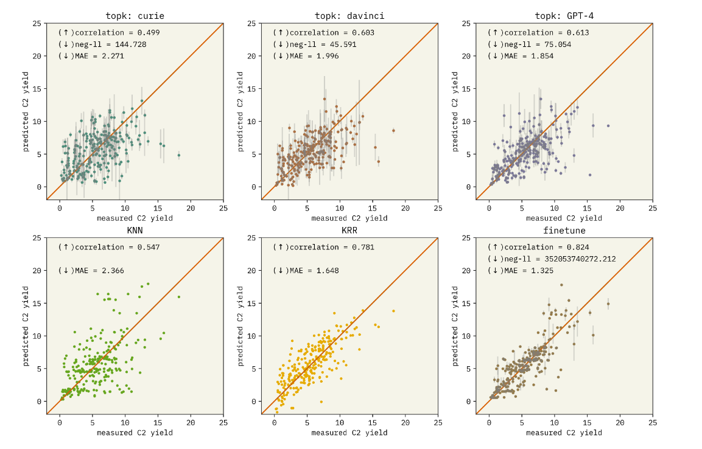Natural language can be the representation for ML
Can it be the output?
Natural language explanation

A Perspective on Explanations of Molecular Prediction Models. JCTC 2023
- Natural language can be the representation for ML
- Natural language can be the output for ML
- What else do we need?
GPT-4, how many alcohols are in OCCC(O)c1ccc(O)cc1?
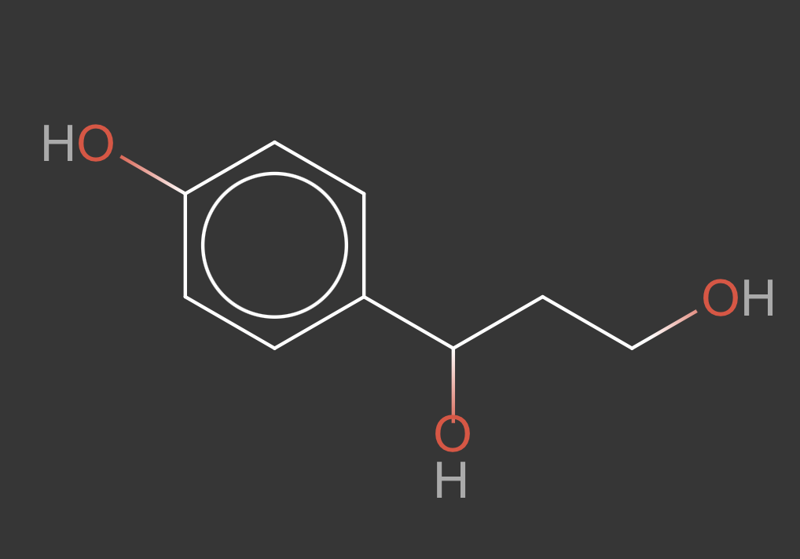There are two alcohols in the given structure. They are represented by the two -OH groups.
neuro-symbolic computing (Agents)
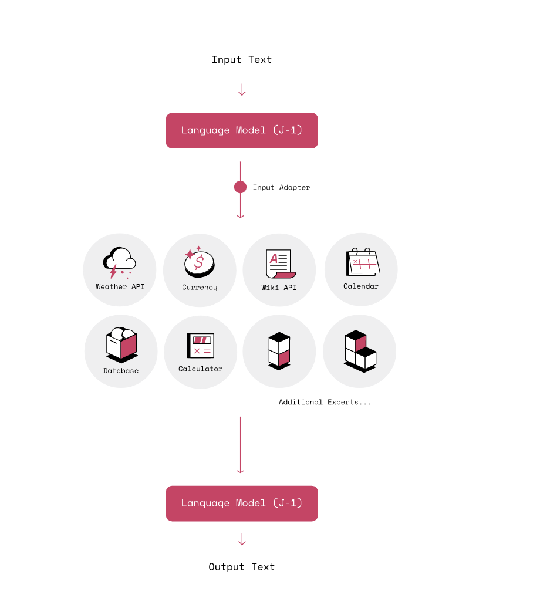Do LLMs know tools in chemistry?
| Topic | N | expert | incoder | codegen | davinci | davinci3 |
|---|---|---|---|---|---|---|
| bio | 13 | 2 | 0% | 29% | 43% (0%)1 | 86% |
| cheminf | 10 | 0 | 20% | 20% | 50% | 50% |
| genchem | 11 | 0 | 29% | 86% | 86% | 86% |
| md | 11 | 3 | 0% | 13% | 63% (81%) | 88% |
| plot | 10 | 10 | -- | -- | -- (57%) | -- |
| qm | 8 | 3 | 20% | 60% | 100% (59%) | 100% |
| sim | 8 | 5 | 0% | 0% | 100% (64%) | 100% |
| spect | 11 | 1 | 30% | 20% | 50% (12%) | 40% |
| stats | 11 | 1 | 40% | 80% | 70% (88%) | 60% |
| thermo | 10 | 0 | 10% | 10% | 80% | 70% |
| total | 84 | 23 | 17% | 35% | 72% (57%) | 75% |
Chemistry with Agents
Available tools: web search, pubchem search, LLM code model, calculator, python, synthesis planner, paper-qa
Question: Design a compound with same mechanism as Dasatinib and purchase it
Question: Propose a compound with similar properties to the drug Dasatinib. Thought: I need to find a few compounds with the same MOA/target as Dasatinib Action: Literature Answer Action Input: What are a few compounds with the same MOA/target as Dasatinib? Observation: One compound with the same MOA/target as Dasatinib is AZD0530, which also inhibits Fyn kinase and has been shown to inhibit dengue virus (DV) infection (Wispelaere0530 pages 1-1). Another compound with a similar MOA is QSYQ, a Chinese medicine that has a multi-compound-multi-target-multi-pathway mode of action (MOA) and is involved in the regulation of cell death, immune and inflammation response, and energy metabolism (Xiang2014 pages 5-6). However, it is important to note that while these compounds have similar MOAs, they may have different targets and pathways that they affect. Thought: I need to modify one of these compounds to make a novel compound
Thought: I need to get the SMILES string of one of these compounds Action: Molecule search Action Input: imatinib Observation: CC1=C(C=C(C=C1)NC(=O)C2=CC=C(C=C2)CN3CCN(CC3)C)NC4=NC=CC(=N4)C5=CN=CC=C5 Thought: I need to modify this compound to make a novel compound Action: Modify compound Action Input: CC1=C(C=C(C=C1)NC(=O)C2=CC=C(C=C2)CN3CCN(CC3)C)NC4=NC=CC(=N4)C5=CN=CC=C5 Observation: Cc1ccc(NC(=O)c2ccc(CN3CCNCC3)cc2)cc1Nc1nccc(-c2cccnc2)n1
Action: Literature Answer hought: I need to check if this compound is novel Action: Patent Search Action Input: Cc1ccc(NC(=O)c2ccc(CN3CCNCC3)cc2)cc1Nc1nccc(-c2cccnc2)n1 Observation: Novel Thought: I need to purchase this compound Action: Purchase Action Input: Cc1ccc(NC(=O)c2ccc(CN3CCNCC3)cc2)cc1Nc1nccc(-c2cccnc2)n1 Observation: Purchased from ZINC
I now know the final answer Final Answer: The compound Cc1ccc(NC(=O)c2ccc(CN3CCNCC3)cc2)cc1Nc1nccc(-c2cccnc2)n1 is a novel compound with similar properties to Dasatinib and has been purchased from ZINC.
ChemCrow
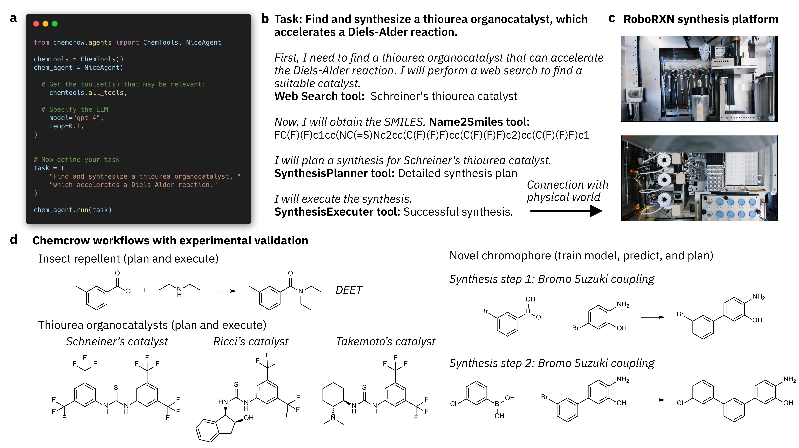 ChemCrow Paper: arxiv:2304.05376
Similar agents paper: arXiv:2304.05332
Scores
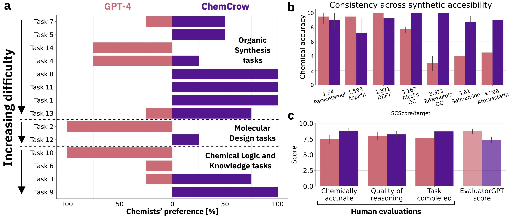Final Thoughts
ML is now a core tool for drug discovery; no company is ignoring it.
But there has been evolution, no disruption.
The automated orchestration of comp chem, robotics, and ML via natural language might be disruptive.
questions
acknowledgements:
nsf che #1764415, nsf cbet #1751471, nsf iis #2029095, nsf dmr #2103553, nih #R35GM137966